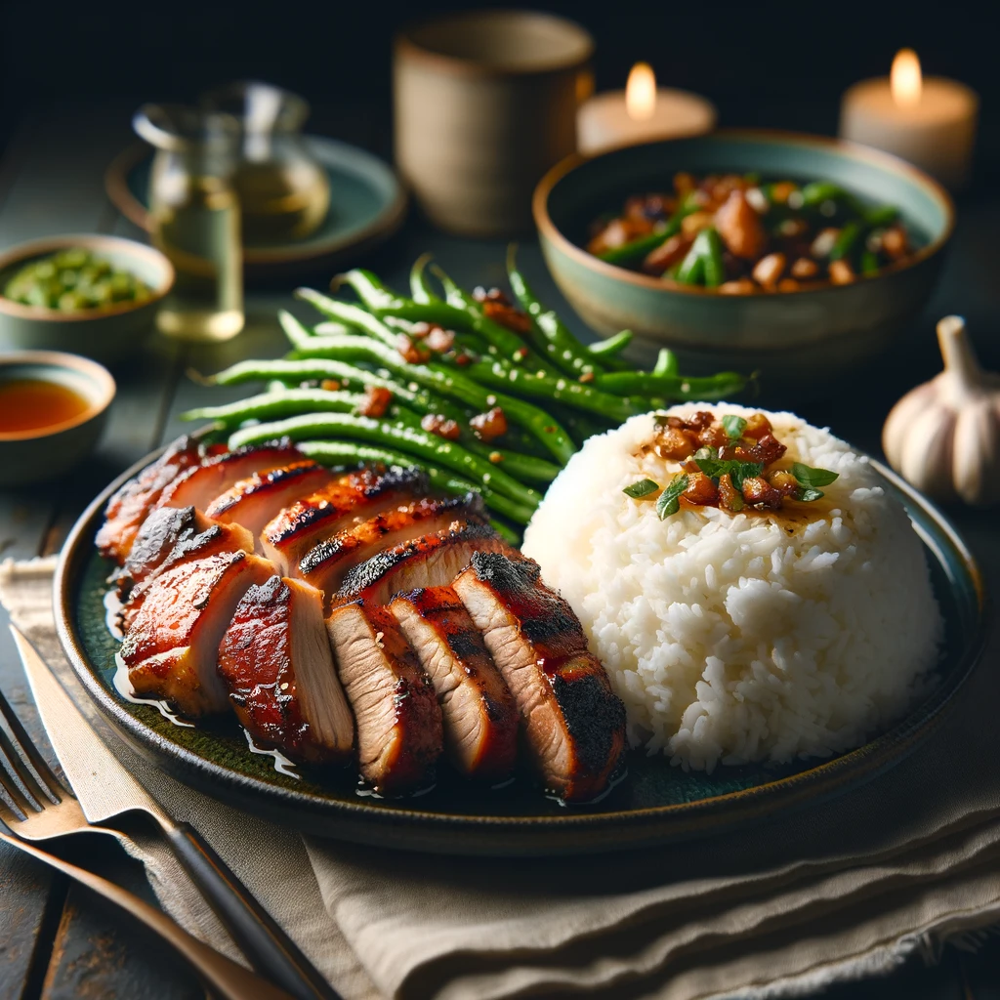

Grilled Pork with White Rice sauteed Green Beans and Garlic
Ingredients
| For Grilled Pork |
- 1 boneless, skinless pork chop (approximately 150 grams)
- 1 tablespoon olive oil
- 1/2 teaspoon dried oregano
- 1/4 teaspoon garlic powder
- 1/4 teaspoon smoked paprika
- Salt and freshly ground black pepper to taste
For Sauteed Green Beans |
- 1 cup fresh green beans, trimmed and cut into bite-sized pieces
- 1 tablespoon olive oil
- 1 clove garlic, minced
- Pinch of salt and pepper
For White Rice |
- ½ cup uncooked white rice
- ¾ cup water
| Nutrition Facts |
Amount |
| Calories |
500-550kcal |
| Protein |
35-40 |
| Fat |
15-20g |
Meal Procedure
- Marinate the Pork:In a bowl, combine olive oil, oregano, garlic powder, paprika, salt, and pepper. Add the pork chop and coat it evenly with the marinade. Let it marinate for at least 15 minutes, or up to 30 minutes for deeper flavor.
- Cook the Rice: While the pork marinates, rinse the white rice in a fine-mesh strainer. In a small saucepan, combine the rinsed rice and water. Bring to a boil over high heat. Reduce heat, cover the pot, and simmer for 15-20 minutes, or until the rice is cooked through and fluffy. Remove from heat and let it sit for 5 minutes before fluffing with a fork.
- Sautee the Green Beans: Heat olive oil in a skillet over medium heat. Add the garlic and cook for 30 seconds, or until fragrant. Add the green beans and cook for 5-7 minutes, or until tender-crisp, stirring occasionally. Season with salt and pepper to taste.
- Grill the Pork: Preheat your grill to medium-high heat. Once hot, sear the pork chop for 2-3 minutes per side, or until cooked through and reaches an internal temperature of 145°F (63°C).
- Assemble and Serve: Plate the cooked rice, top it with the grilled pork chop, and add the sauteed green beans on the side.